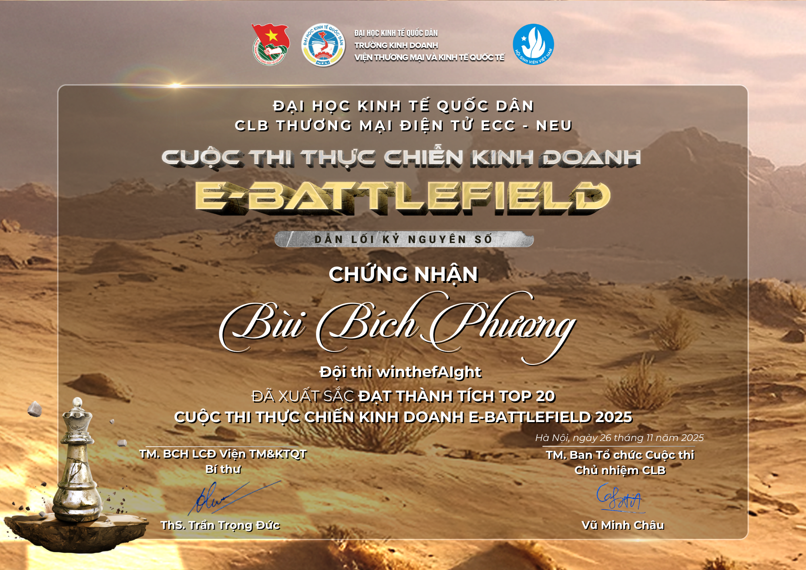
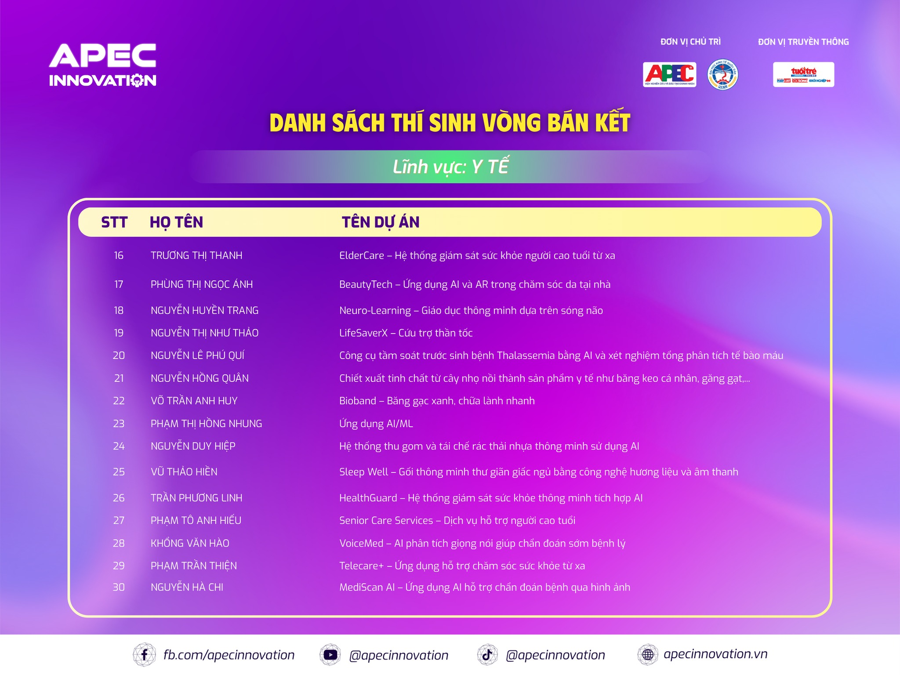
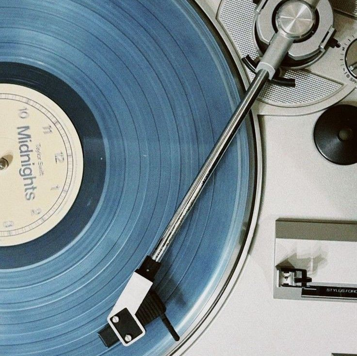

End of Chapter 1
"Mọi hành trình dài đều bắt đầu từ những bước đi nhỏ bé. Cảm ơn bạn đã xem qua những dấu ấn đầu tiên của mình."

Top 20 E-Battlefield
E-Battlefield là cuộc thi thực chiến kinh doanh TMĐT Xuyên biên giới với mùa III hướng đến việc sử dụng AI trong Thương mại điện tử thông qua mô hình vận hàng kinh doanh thực chiến trên các sàn thương mại điện tử.
Một hành trình đầy kỷ niệm và bài học. Tôi đã học được cách vận hành shop trên Amazon, làm đề án kinh doanh cũng như chạy lượng. Tuy chưa thể lọt vào vòng Chung kết nhưng đây sẽ là kinh nghiệm đáng giá cho tôi trong những cuộc thi tiếp theo.

APEC Startup Competition
Đây là lần đầu tiên tôi mang ý tưởng khởi nghiệp ra biển lớn. Cạnh tranh với hơn 1000 ý tưởng vô cùng xuất sắc khác, lọt vào Top 90 là một niềm tự hào siêu to khổng lồ.
Ý tưởng của nhóm có tên Life Saver X - robot hỗ trợ phân loại chấn thương nhằm mục đích giúp các y bác sĩ có thể tập trung tốt hơn vào các ca bệnh nặng hoặc nguy kịch.


The Diary
of Bui Bich Phuong